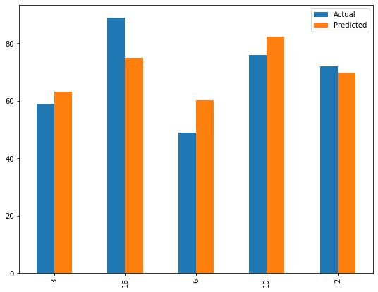
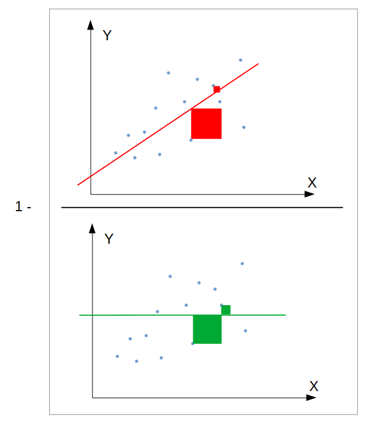
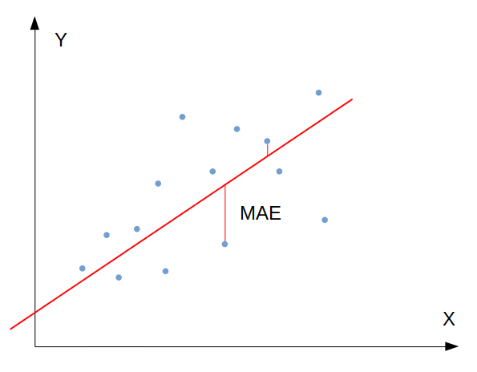
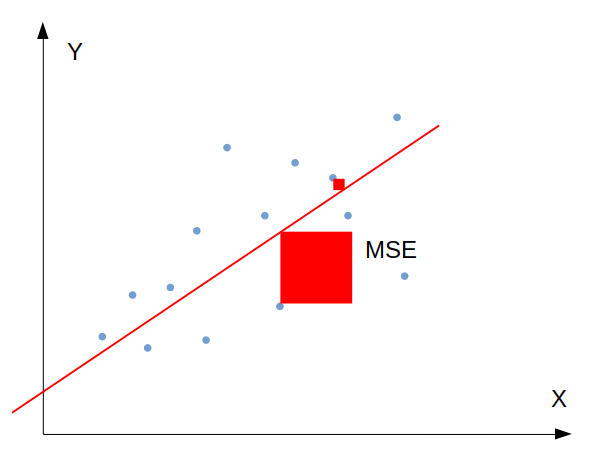
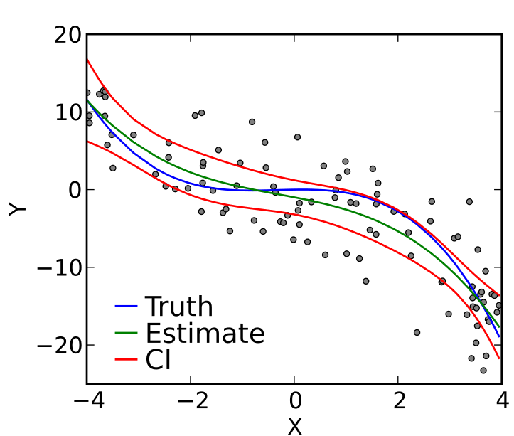

โดย ชิตพงษ์ กิตตินราดร | ธันวาคม 2562
ในบทนี้เราจะเริ่มมาเจาะลึกในรายละเอียด โดยจะอธิบายเรื่องการเตรียมข้อมูลให้มีความพร้อมสำหรับการสร้างโมเดล
เราได้ลองสร้าง Machine learning model มาสองเรื่องแล้ว ถ้าสังเกตว่าพบว่า ข้อมูล Input x นั้นจะต้องเป็นตัวเลข แต่ในความเป็นจริง เรามักได้ข้อมูลมาเป็นข้อความ เช่น [ใช่, ไม่ใช่] หรือ [น้อย, กลาง, มาก] ถ้าเรามีข้อมูลแบบนี้ เราจะต้องแปลงข้อมูลที่เป็นข้อความหรือหมวดหมู่ ให้เป็นตัวเลขเสียก่อน
สมมุติเรามีข้อมูลรายได้ ระดับความสุข ภูมิภาคที่อาศัย และอายุขัย ทั้งหมด 20 ตัวอย่าง เราต้องการพยากรณ์อายุขัยโดยใช้ข้อมูล 3 อย่างแรก:
| Income | Happiness | Area | LifeExpectancy |
|---|---|---|---|
| 132546 | High | BKK | 80 |
| 190998 | Medium | NE | 75 |
| 49308 | Medium | S | 72 |
| 32062 | Low | NE | 59 |
| 71707 | High | BKK | 65 |
(แสดง 5 ตัวอย่างแรก)
จะเห็นว่า:
หน้าที่ของเราคือจะต้องแปลง Happiness และ Area เป็นตัวเลข โดยหลักการมี 2 ขั้น ได้แก่
คือการแทนค่าในแต่ละหมวดด้วยตัวเลขต่างๆ กัน เช่น High = 0, Medium = 1, Low = 2 เป็นต้น โดยเราสามารถแปลงเองใน Excel หรือจะให้ pandas แปลงให้ก็ได้ ลองเขียนโค้ดตั้งแต่เริ่มต้นดังนี้:
import numpy as np
import pandas as pd
from sklearn.preprocessing import OneHotEncoder
from sklearn.preprocessing import LabelEncoder
from sklearn.model_selection import train_test_split
from sklearn.linear_model import LinearRegression
from sklearn import metrics
import matplotlib.pyplot as plt
# Load the dataset
df = pd.read_csv("data/life_expectancy.csv")
# Explore
print(df.head())
print(df.info())
print(df.describe())
เราจะเห็นว่า Income และ LifeExpectancy เป็นจำนวนเต็ม (int64) ส่วน Happiness และ Area เป็น object ซึ่งสองตัวนี้เป็นสิ่งที่เราต้องจัดการ
RangeIndex: 20 entries, 0 to 19
Data columns (total 4 columns):
Income 20 non-null int64
Happiness 20 non-null object
Area 20 non-null object
LifeExpectancy 20 non-null int64
dtypes: int64(2), object(2)
จากนั้นให้เลือกเฉพาะคอลัมน์ที่เป็น object แล้วลองดูข้อมูลที่ถูกเลือก
# Limit to categorical data using df.select_dtypes()
df_categories = df.select_dtypes(include=[object])
print(df_categories.head())
print(df_categories.columns)
print(df_categories.shape)
จะได้ Dataframe ใหม่ที่มีคอลัมน์ Happiness และ Area เท่านั้นตามต้องการ และมีมิติ (20, 2)
Index(['Happiness', 'Area'], dtype='object')
(20, 2)
จากนั้นเรียก Class LabelEncoder() ใส่เป็น Argument ของ Method .apply ของ Dataframe ใหม่ของเรา แล้วพ่วง Method .fit_transform เพื่อแปลง scipy sparse matrix ให้เป็น numpy dense matrix ซึ่งอยู่ในรูปแบบที่เราจะใช้
# Create a LabelEncoder object and fit it to each feature in X
X_label = df_categories.apply(LabelEncoder().fit_transform)
print(X_label.head())
ถ้างง บรรทัดนี้คือการสั่งให้ Dataframe ของเราดำเนินการเข้ารหัส Label จากข้อความให้กลายเป็นตัวเลข แล้วแปลงผลลัพธ์ให้อยู่ในรูปแบบที่เอาไปใช้ต่อในการเทรนโมเดลได้
ได้ผลคือ:
Happiness Area
0 0 0
1 2 2
2 2 3
3 1 2
4 0 0
ถ้าลองเทียบกลับกับข้อมูลจริง เราจะได้คู่รหัสดังนี้:
จากนั้นไปสู่ขั้นตอนต่อไป คือการเข้ารหัส One-hot encoding
ขั้นตอนที่แล้ว เราได้รหัสตัวเลขเดี่ยวๆ แทน Label ของแต่ละคอลัมน์ จริงๆ ดูเหมือนเราน่าจะนำรหัสนี้ไปใช้เป็น Input ของโมเดลได้เลย ซึ่งจริงในบางกรณี อธิบายคือการเข้ารหัสแบบ Factorisation ตัวเลขที่อยู่ใกล้กันจะถูกตีความว่ามี "คุณค่า" ใกล้กัน เช่น 1 กับ 2 ใกล้กันมากกว่า 1 กับ 3 ดังนั้น ถ้าค่าจริงของ 1, 2, 3 มีความสัมพันธ์เชิงคุณค่าที่ต่อเนื่องกัน เราก็สามารถใช้ Factorisation ได้เลย เช่นถ้า 1 แปลว่า "น้อย", 2 แปลว่า "ปานกลาง", และ 3 แปลว่า "มาก" เป็นต้น
แต่ในความเป็นจริง มีหลายกรณีที่ค่าจริงของแต่ละเลขนั้นไม่ได้มีความสัมพันธ์ต่อเนื่องเป็นลำดับขั้นกัน เช่นในกรณีภูมิภาคที่อยู่อาศัย ค่าของแต่ละเลขล้วนมีความหมายของมันเอง และไม่เกี่ยวข้องทางลำดับชั้นกับค่าอื่น
วิธีการแก้ปัญหานี้ คือการใช้ One-hot encoding ซึ่งคือการเข้ารหัสแบบ Binary แทนแต่ละ Label ตัวอย่างเช่น [1, 0, 0, 0] แทน BKK (กทม.), [0, 1, 0, 0] แทน N (ภาคเหนือ) เป็นต้น วิธีการนี้จะทำให้ Label แต่ละอันนั้นเป็นอิสระต่อกัน ทำให้การสร้างโมเดลนั้นแม่นยำมากขึ้น
วิธีการทำ One-hot encoding คือ:
# Create a OneHotEncoder object, and fit it to all of X
X_1hot = OneHotEncoder().fit_transform(X_label).toarray()
print(X_1hot[0:5, :])
print(X_1hot.shape)
ได้ผลคือ:
[[1. 0. 0. 1. 0. 0. 0.]
[0. 0. 1. 0. 0. 1. 0.]
[0. 0. 1. 0. 0. 0. 1.]
[0. 1. 0. 0. 0. 1. 0.]
[1. 0. 0. 1. 0. 0. 0.]]
(20, 7)
สังเกตว่าการทำ One-hot encoding จะเป็นการขยายจำนวน Feature โดยจำนวนที่ขยาย เท่ากับ ผลรวมของจำนวน Label ที่เป็นไปได้ทั้งหมด ดังนั้นจากตัวอย่างของเรา มี 2 Feature ที่ต้องทำ One-hot encoding, Feature แรกมี 3 Label, Feature ที่สองมี 4 Label ดังนั้นจำนวน Feature ใหม่จึงเท่ากับ 7
คำถามคือ แล้วเราจะเอา Array ใหม่นี้ ไปรวมกับข้อมูลเดิมเพื่อสร้าง Input X ได้อย่างไร คำตอบอบู่ที่ส่วนถัดไป
ทบทวนว่าตอนนี้เรามี Dataframe อยู่ 2 ชุด
df คือ Dataframe ต้นฉบับ มีหัวข้อคือ Income, Happiness, Area, และ LifeExpectancydf_1hot คือ Dataframe เฉพาะ Happiness และ Area ที่ถูกเข้ารหัส (และขยายขนาด) ด้วย One-hot encoding แล้วทีนี้เรารู้ว่าการจะเทรนโมเดล เราจะต้องเตรียม Dataframe 2 ชุด คือ X ซึ่งเป็น Input ทั้งหมด และ y ซึ่งเป็น Label คำตอบทั้งหมด จะทำอย่างไรดี? อธิบายไปตอนนี้อาจจะงง ลองมาดูโค้ดแล้วอธิบายด้วยโค้ดดีกว่า:
# Recombine numerical and one-hot dataframes to make X
df_1hot = pd.DataFrame(X_1hot)
X = pd.concat([df["Income"], df_1hot], axis=1, sort=False,)
X.columns = ["Income",
"Happiness-Hi", "Happiness-Lo", "Happiness-Mid",
"Area-BKK", "Area-N", "Area-S", "Area-NE"]
y = df["LifeExpectancy"]
print(X.head())
print(X.shape)
print(y.head())
print(y.shape)
อธิบายดังนี้:
X_1hot ที่เป็น Array ให้เป็น pandas dataframe ก่อน ตั้งชื่อว่า df_1hotdf ต้นฉบับ เข้ากับ df_1hot ทั้งหมด โดยกำหนด Argument axis=1 เพื่อให้ต่อออกไปทางแนวนอนdf ต้นฉบับอย่าลืมตรวจดูว่าผลที่ได้นั้นเป็นไปตามที่เราคิด ด้วยการ print head และ shape ของ X กับ y ออกมาดู
เป็นอันว่าเราได้ Dataframe X และ y ที่พร้อมสำหรับการสร้างโมเดลแล้ว
เรามาฝึกโมเดล Linear regression กันเลย โดนอย่าลืมแยกข้อมูลออกเป็น Train set กับ Test set ก่อน:
# Split the data into train and test set
X_train, X_test, y_train, y_test = train_test_split(X, y, random_state=1)
print("X_train shape is:", X_train.shape)
print("y_train shape is:", y_train.shape)
print("X_test shape is:", X_test.shape)
print("y_test shape is:", y_test.shape)
# Train the model
lr = LinearRegression().fit(X_train, y_train)
coeff_df = pd.DataFrame(lr.coef_, X.columns, columns=['Coefficient'])
print(coeff_df)
พอฝึกแล้ว มาลองดูว่าโมเดลให้คำตอบเป็นค่า Coefficient ของน้ำหนักสำหรับแต่ละ Feature อย่างไร สำหรับ Linear regression หลายตัวแปร หรือที่เรียกว่า Multivariate linear regression นี้ สูตร Linear function คือ:
โดย n คือจำนวน Feature ซึ่งในกรณีของเราคือ 8
เราสามารถสร้างตารางแสดงค่า Coefficient ของแต่ละ Feature ได้ด้วย pandas dataframe โดยกำหนดใน Argument ให้ lr.coef_ เป็น Input, ให้ชื่อคอลัมน์ X.columns เป็น Label แกนนอน และตั้งชื่อคอลัมน์โดยการกำหนด columns=['Coefficient'] ได้ผลดังนี้:
Coefficient
Income 0.000055
Happiness-Hi 8.306516
Happiness-Lo -8.859939
Happiness-Mid 0.553423
Area-BKK -9.442937
Area-N 3.505052
Area-S 4.850387
Area-NE 1.087498
จากนั้น เราลองมาดูเลยดีกว่าว่าค่าที่พยากรณ์ได้เทียบกับค่าจริงใน Test set เป็นอย่างไร:
# Make a prediction on test set
y_pred = lr.predict(X_test)
df_pred = pd.DataFrame({'Actual': y_test, 'Predicted': y_pred})
print(df_pred)
เราพยากรณ์ y_pred โดยใช้ X_test เป็น Input เพื่อให้ y_pred ที่ได้ สามารถนำไปเปรียบเทียบกับ y_test ที่เรารู้ค่าอยู่แล้ว เราป้อนทั้งสองตัวเป็น Input ของ pandas dataframe จะได้ผลว่า:
Actual Predicted
3 59 63.213900
16 89 74.945451
6 49 60.294754
10 76 82.234579
2 72 69.815254
ผลที่ได้ไม่ไกล แต่ก็ไม่ถึงกับใกล้ เราอยากรู้เพิ่ม จึงลองคำนวนค่าเฉลี่ยของ y_test และ y_pred ดู:
print("Mean of y_test is", np.mean(np.array(y_test)))
print("Mean of y_pred is", np.mean(y_pred))
ได้ผลว่า:
Mean of y_test is 69.0
Mean of y_pred is 70.10078755113827
ซึ่งใกล้กันมาก แสดงว่าการพยากรณ์แต่ละรายการ มีความแปรผันมาก เลยลองพล็อตกราฟเทียบให้เห็นๆ:
# Plot the conparison between actual and predicted y
df_pred.plot(kind="bar", figsize=(9,7))
plt.show()
ออกมาดังนี้:

การดูด้วยตาย่อมไม่เพียงพอ เราเลยต้องลองใช้มาตรวัดต่างๆ สำหรับ Linear regression มาวัดดู:
# Evaluate the model
print("Train set R2-score = " + str(lr.score(X_train, y_train)))
print("Test set R2-score = " + str(lr.score(X_test, y_test)))
print('Test set Mean Absolute Error:', metrics.mean_absolute_error(y_test, y_pred))
print('Test set Mean Squared Error:', metrics.mean_squared_error(y_test, y_pred))
print('Test set Root Mean Squared Error:', np.sqrt(metrics.mean_squared_error(y_test, y_pred)))
ผลที่ได้มีดังนี้:
Train set R2-score = 0.5401999191488698
Test set R2-score = 0.5965533912121594
Test set Mean Absolute Error: 7.596505622473046
Test set Mean Squared Error: 77.30037024375025
Test set Root Mean Squared Error: 8.792062911726136
อธิบายดังนี้
1) Score วัดค่าสะสมของความต่างระหว่างค่าจริงกับค่าที่พยากรณ์ได้ เมื่อเทียบกับค่าสะสมระหว่างค่าจริงกับค่าเฉลี่ยของค่าจริงทั้งหมด:

2) Mean Absolute Error (MAE) วัดค่าเฉลี่ยของผลรวมความต่างระหว่างค่าจริงกับค่าที่พยากรณ์ได้:

วัดค่าเฉลี่ยของความคลาดเคลื่อนของทั้งโมเดล
3) Mean Squared Error (MSE) วัดค่าเฉลี่ยของผลรวมยกกำลังสองของความต่างระหว่างค่าจริงกับค่าที่พยากรณ์ได้:

สำหรับ MSE ตัวอย่างบางตัวที่มีความคลาดเคลื่อนระหว่างค่าจริงกับค่าพยากรณ์สูง จะถูกให้ค่าน้ำหนักมากเป็นทวีคูณ ดังนั้น MSE จึงชี้วัดได้ดีว่าโมเดลของเรามีตัวอย่างที่มีค่าความคลาดเคลื่อนสูงผิดปกติหรือไม่ (Sensitive to outliers)
4) Root Mean Squared Error (RMSE) คือ Square root ของ MSE:
RMSE ใช้ Square root แปลง MSE กลับมาให้มีหน่วยใกล้เคียงกับ MAE เพื่อให้ตีความเปรียบเทียบได้ง่ายขึ้น สามารถชี้วัดการกระจายตัวของค่าความคลาดเคลื่อนได้ดี ในกรณีของเราให้ค่าใกล้เคียงกับ MAE คือประมาณ ~ 7-8
จะเห็นว่าโมเดลของเรายังพยากรณ์ได้ไม่ดีนัก ซึ่งมีสาเหตุและทางแก้ดังนี้:

ภาพโดย Skbkekas - Own work, CC BY 3.0
เป็นอันว่าเราสามารถแปลงข้อมูลที่เป็นข้อความหรือหมวดหมู่ให้เป็นตัวเลขได้แล้ว บทต่อไปเราจะพูดถึงการทำ Feature scaling ซึ่งเป็นอีกขั้นตอนของการเตรียมข้อมูล
หน้าแรก | บทที่ 4 Logistic Regression | บทที่ 6 Feature Scaling